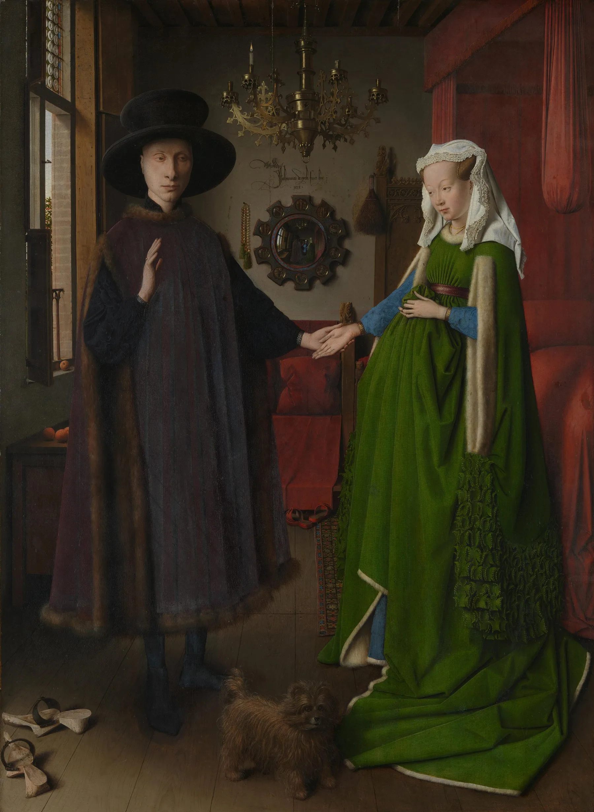
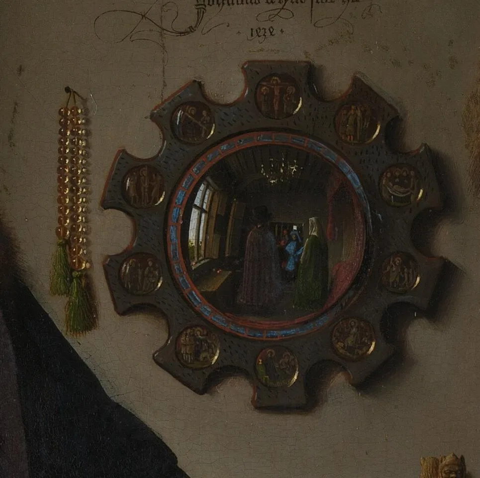
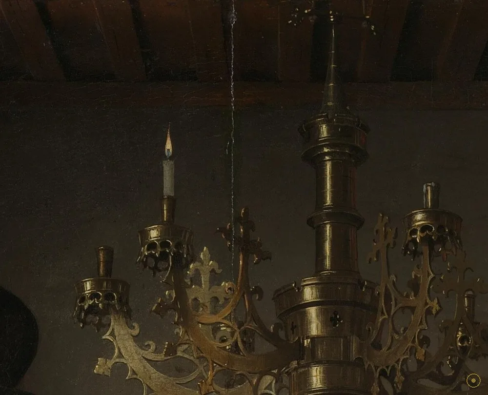
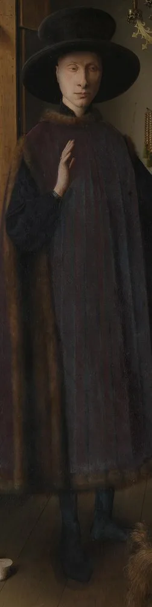
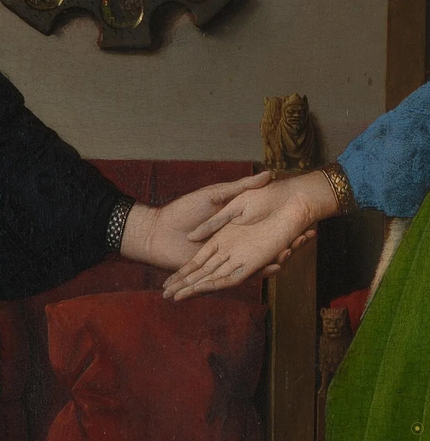
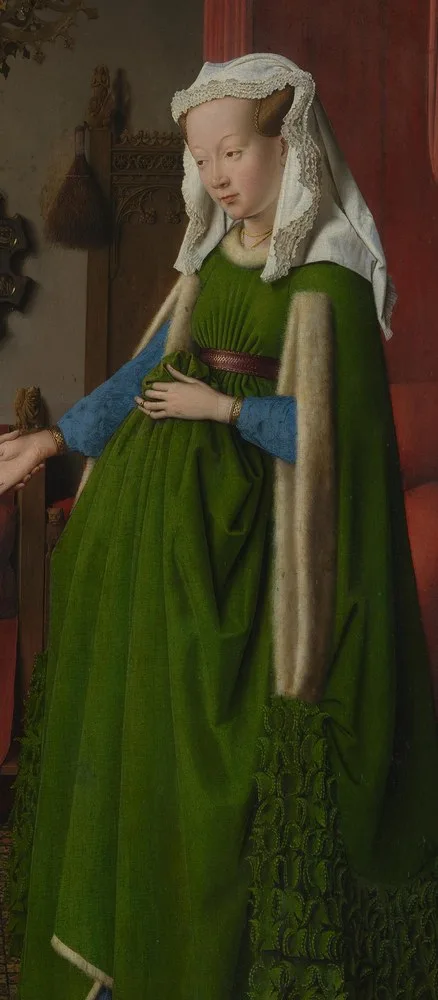
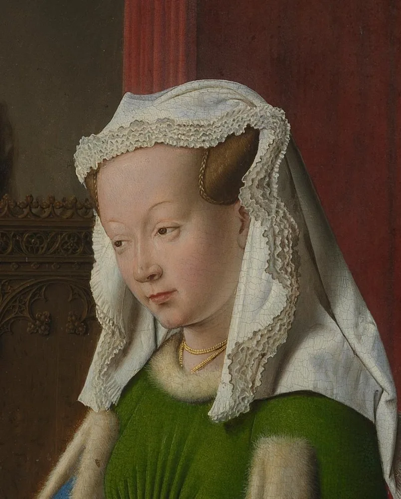
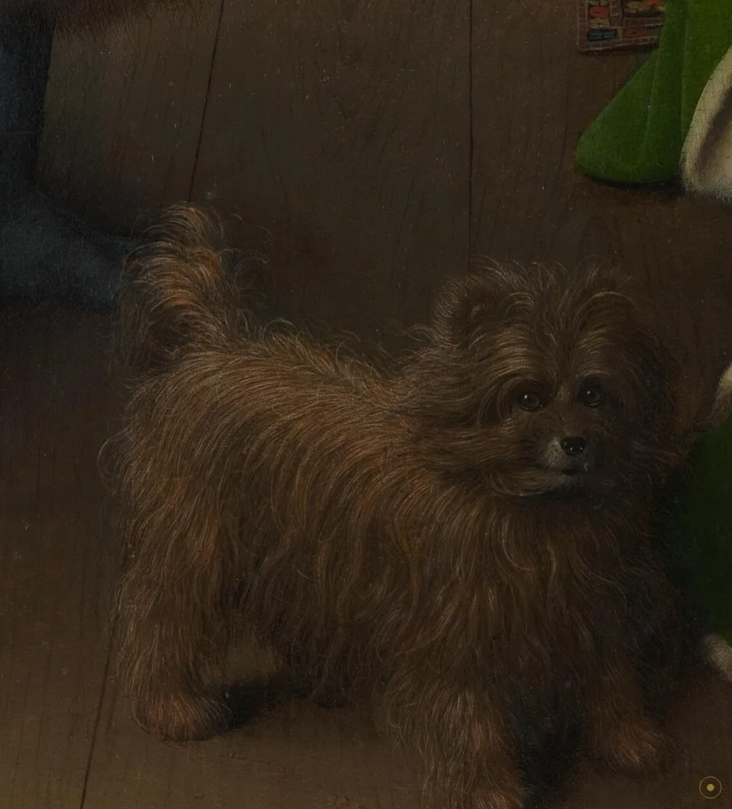
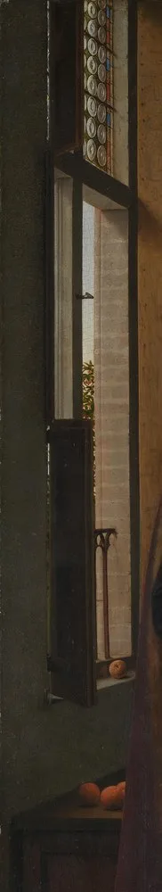

1434 年，尼德兰画家扬·凡·艾克在布鲁日画下了这间屋子：一个意大利商人和他的妻子，站在一张挂着凸面镜的床前。画上没有任何文字告诉你这是婚礼、婚约还是别的什么——五百年来，所有解读都是后人从每一个物件里「读」出来的。
画里几乎每一件东西都「会说话」。吊灯里只点了一支蜡烛；窗台上摆着几只橘子——在当时，橘子是必须从南方海运来的奢侈品；地上是脱下的木屐；床头的雕刻、墙上的念珠、脚边的狗……它们在中世纪和文艺复兴的观众眼里，各自是一种符号。艺术史家潘诺夫斯基把这种「把含义藏在日常物里」的做法叫做「伪装象征主义」。
但这幅画最离奇的地方，是墙上那面凸面镜。镜子里，你能看见这对夫妇的背影，看见整间屋子被收进一个巴掌大的圆里，还看见门口站着两个男人——其中一个，被认为就是画家凡·艾克自己。镜子上方他用拉丁文写下：Johannes de Eyck fuit hic 1434——「扬·凡·艾克曾在此。1434」。
今天它挂在伦敦国家美术馆，编号 NG186。1842 年入藏时，它就已经是「名画」；而它真正被当作「北方文艺复兴的原点」来研究，要等到 20 世纪潘诺夫斯基那篇论文之后。这一页，我们就顺着那面镜子走进去，把画里的物件一个个拆开。
—— 据伦敦国家美术馆公开档案与潘诺夫斯基《早期尼德兰绘画》整理（中译）
在本页左下角，可以点亮这首与画同年岁的勃艮第回旋歌。
从凸面镜到脚边的狗——凡·艾克把整间屋子，画成了一部可以逐件查阅的词典。

点击画面中的 ✦ 光点 查看画面细节 · 图片来源：Wikimedia Commons（公有领域）
它曾被认为是「单纯的肖像」，直到 20 世纪，才被发现是一桩被画下来的婚约。
1434 · 布鲁日
1434 年，扬·凡·艾克在勃艮第治下的商贸重镇布鲁日，为意大利商人阿尔诺芬尼画下这幅橡木板油画（82.2×60 cm）。板上不见起草痕迹，凡·艾克以油彩层层罩染，把镜子、毛发、金属都画到可以触摸。镜子上方那行「fuit hic 1434」，让这幅画同时成了画家的「到此一游」与「见证人签名」。
➤1434 之后 · 流传
几个世纪以来，这幅画被当作一对富商的普通双人肖像流传，谁也没把它当「婚约画」读。镜中的男子、脚边的狗、孤燃的蜡烛，都被看作单纯的室内陈设。直到 1934 年，艺术史家潘诺夫斯基发表论文，才把画里每一件物件重新「解码」成婚姻与忠贞的象征——这幅画的现代名声，由此而来。
➤1842 · 伦敦
1842 年，这幅画进入伦敦国家美术馆（馆藏号 NG186），被视为早期尼德兰绘画的标杆。今天它仍是馆内最常被围观的作品之一。有意思的是，红外反射成像显示，凡·艾克在创作中反复修改：狗、吊灯、木屐都是后来添上的——也就是说，这幅「定稿」本身就是一层层象征叠出来的。
真事一 · 她并没有怀孕。画中女子提起厚重的裙摆，让腹部显得隆起，几百年来无数观众以为她「有喜」。但伦敦国家美术馆的官方说明写得明白：她只是把宽大的衣裙提了起来——这在当时是显示衣料华贵、也显示端庄的姿势，与身孕无关。
真事二 · 镜子里的两个男人，其中一个可能是画家本人。凸面镜反射出门口站着两个人，一般解释是「画家带着一个见证人走进房间」。这恰好呼应镜上那行「fuit hic」（我曾在此）——凡·艾克似乎在说：我不仅画了它，我还「在场」。也有学者认为那只是普通的访客，但「画家即见证」的说法流传最广。
真事三 · 狗、吊灯、木屐是「后来加的」。20 世纪的红外扫描证明，凡·艾克在作画过程中不断修改：脚边的小狗、屋顶的吊灯、门口的木屐，都不是一开始的构思，而是画到中途才添上去的。换句话说，我们今天看到的「密布象征」的成品，是画家一边画、一边往里塞意义的产物。
※ 女子非孕、吊灯单烛、凸面镜与十幅受难小图、橘子的象征、潘诺夫斯基「伪装象征主义」解读均据伦敦国家美术馆公开档案与公开艺术史资料；「画家即见证」「怀思说」属学界推论，非定论；女子确切身份至今仍有争议。
把画面拆开看：镜子、蜡烛、橘子、狗——每件东西都在替这场婚约说话。

一枚硬币大小的面积里，收进了整间屋子、夫妇的背影，和门口两个男人。

昂贵黄铜，只点一支蜡烛——上帝临在，还是怀思？两种读法都站得住。

毛皮镶边长袍，抬起的右手，是誓约的手势，还是「介绍」这位女子？

没有神父、没有契约，这两只交握的手，就是画面里唯一的婚书。

昂贵的绿，罕见而矜贵——这一身行头本身就在声明家底。

平静、微垂、几乎无表情——15 世纪尼德兰肖像的标准答案。

脚边的小母狗，是 fidelity 的象征；红外显示它是后来才添上的。

暗室里唯一的自然光，窗台摆着橘子——把「通远方贸易」写在明面。
凡·艾克常被归功于（或与兄长胡伯特共同完善）油性媒剂的成熟运用。相比蛋彩，油彩干得慢、可层层罩染，能把镜子、金属、毛发画到近乎摄影。《阿尔诺芬尼夫妇像》就是这份技术的广告：一个凸面镜里能塞进整个世界，靠的就是油彩对细节的承载力。
画上没有婚书、没有神父、没有日期之外的字——除了那行镜子上的签名。潘诺夫斯基认为，这正是一种「以画为证」的中世纪思维：把一件事的全部证据，都交给图像来承载。在识字率不高的时代，一幅画比一张纸更能「立此存照」。
潘诺夫斯基把凡·艾克这类「日常物背后藏着神圣含义」的做法命名为 disguised symbolism（伪装象征主义）。橘子、狗、烛、念珠、木屐，表面是居家杂物，底下是婚姻、忠贞、神圣的暗语。读懂这套密码，才算是读完了这幅画。
1934 年之前，没人把它当婚约画。是潘诺夫斯基的论文把整幅画重新解码，让它从一幅「富商合影」升格为艺术史的关键节点。今天我们对它的所有「经典解读」，其实都只有不到一百岁——这幅画的名声，是被 20 世纪「发明」出来的。
扬·凡·艾克于布鲁日绘成，橡木板油画，82.2×60 cm，镜上署「Johannes de Eyck fuit hic 1434」。
作为私人收藏中的「双人肖像」流传，长期未被当作婚约画解读。
进入伦敦国家美术馆（馆藏号 NG186），成为早期尼德兰绘画的标杆。
潘诺夫斯基发表论文，将画中物件解码为婚姻与忠贞的象征，「婚约画」之说确立。
国家美术馆镇馆作品之一，红外扫描揭示狗、吊灯、木屐为后期添绘。